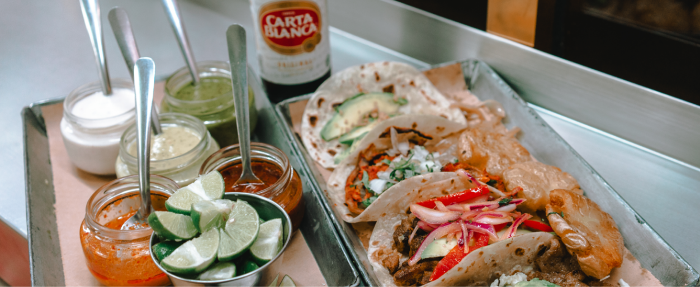
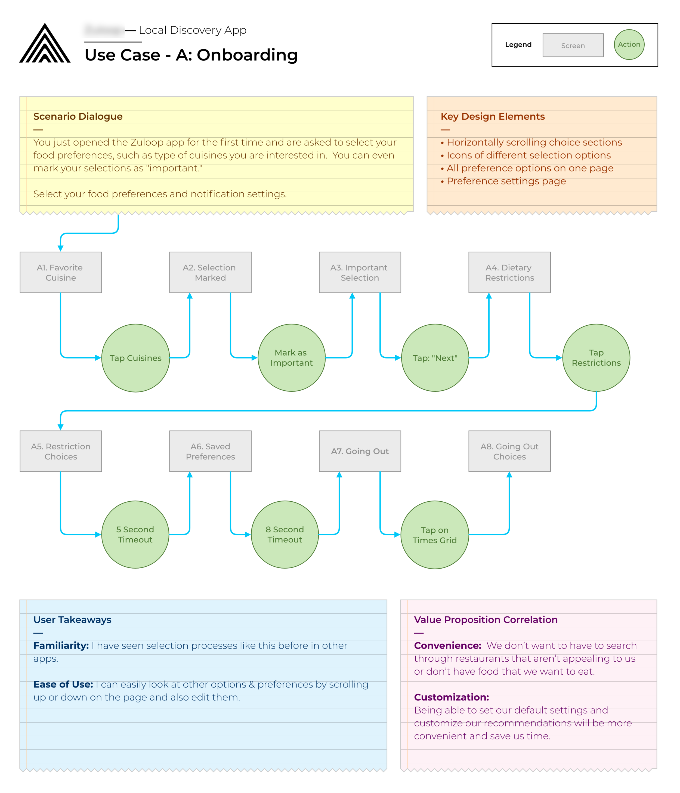
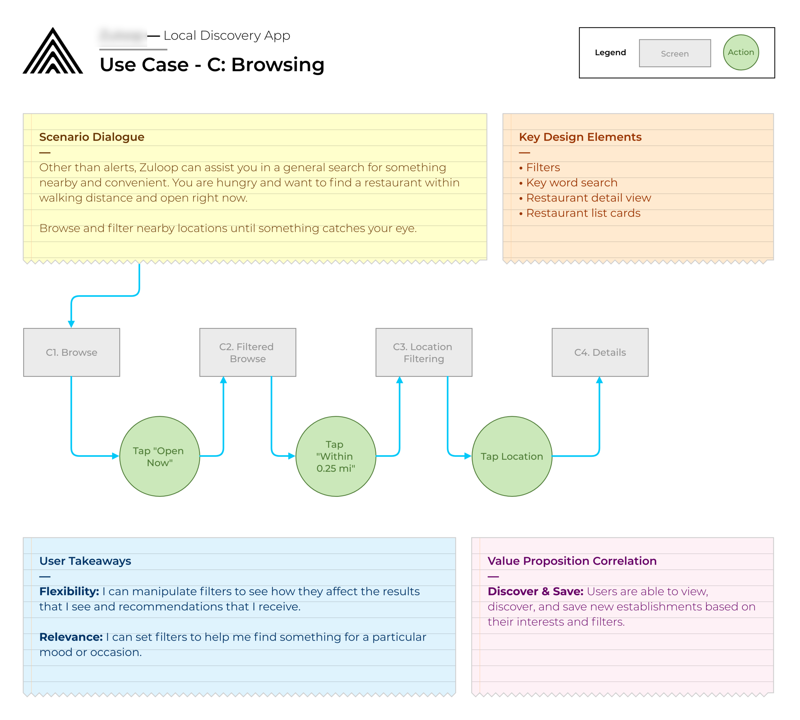
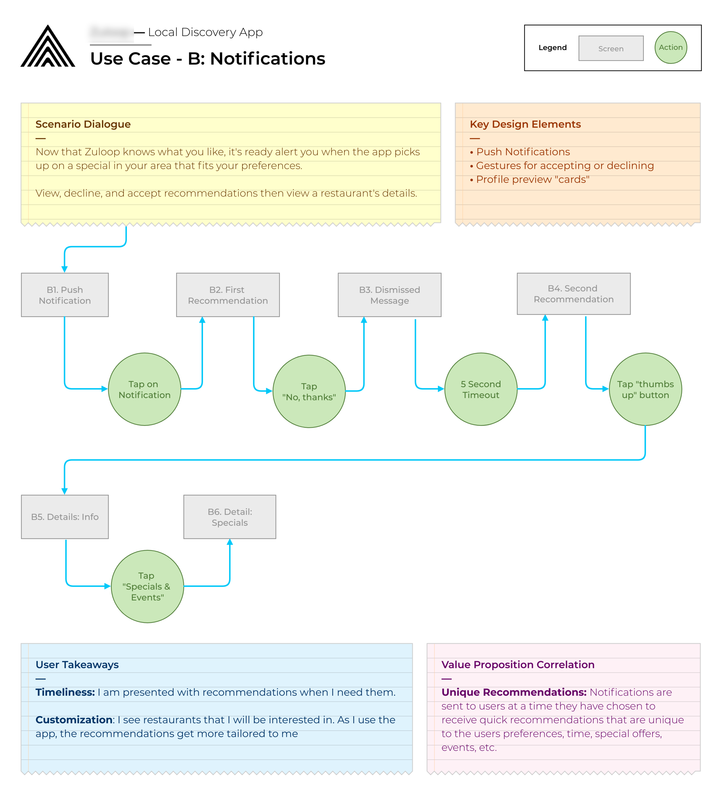
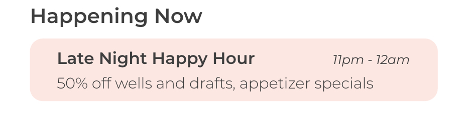
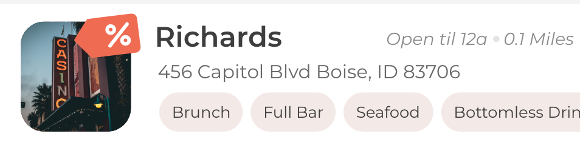
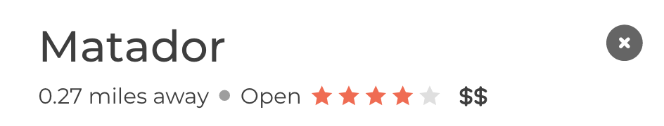
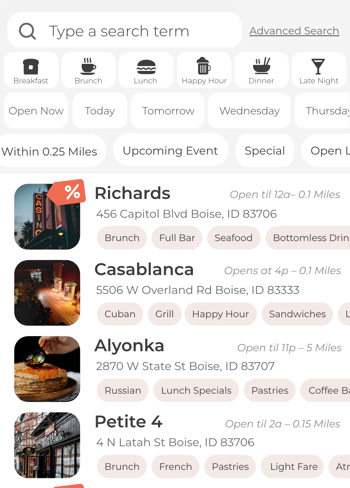

Introduction
The market is pretty saturated with restaurant apps. So when a client asks your development team to design and develop an app that finds local deals for users, it has to be with market forces in mind. Our client wanted an app where users could easily be notified of upcoming deals at local 4+ star restaurants. Before we started the design and development process, however, we wanted to make sure our client would be successful when the product actually hit the market; we wanted to make sure demand for an app with this value proposition was there and that we could design features that would make the app useful and compelling for users.
We didn't want to just design a beautiful app for our client, but do our best to help them make a profit. To that end, we began our product design with market research and discovery interviews. I interviewed various users in the target market to discover who they are and what they're looking for in an app that helps them find restaurant deals.
We wanted to answer two questions with our interviews and market research:
- Will anyone actually use an app to find local restaurant deals?
- If so, what features are users looking for in that type of app?
Discovery Interviews, Market Research, and Key Features
With our initial discovery interviews and market research we did find an unmet need in the market that satisfied the scope of the client's vision. But we still had some assumptions to validate… we were not convinced that this app would succeed unless it had great features to make it stand out in a very full market landscape.
Based on our discovery interviews, I came up with a list of key features that would answer users' needs and help DealZ stand out from the competition. Then I drafted a list of key use cases and diagrammed the user flow for each of them. Once validated and approved, these would be the guide for our MVP. I would then send these to the client for approval and test them with a clickable prototype.
Key Use Cases
The key use cases I identified from our discovery interviews were:
- Onboarding
- Notifications
- Browsing
I've explained the Onboarding use case below, and included the diagrams of the other two key use cases for the clickable prototype as well.
A. Onboarding: The onboarding experience would be where users first put in their preferences, in order to make the app tailored to their individual experience, which we had found was important to users in the discovery process. During onboarding, users would also select when they usually go out, a key differentiator between DealZ and competitor apps. We wanted to allow DealZ to leverage push notifications in order to give users deals at just the right time when they are most relevant to them. For instance, a user who is out at a club at 2am isn't interested in lunch specials for the next day, but might be interested in the 2 for 1 tacos at the late-night restaurant next to the bar where they've been dancing. During onboarding, users would select when they go out the most and if they want notifications for specials at that time.



Once I had a key features document and key flows, I wireframed and prototyped the key user flows and tested them with users. The intention of our initial prototype was to validate some of our assumptions about what users are looking for and how best we can meet their needs. To that end we did not wire the whole prototype, but just the specific user flows that we wanted to get user feedback on. This was a practice that I hadn't tried before, but definitely will do in the future. Testing out the most-important user flows in a controlled fashion can be immensely helpful, and doing it this way keeps it timely but impactful.
Usability Testing
I tested the prototype with 7 users. Some things I learned from testing the prototype included:
- Users wanted to know not only when deals would be starting but when specials or events like Happy Hours would end, so I added end dates/times to listings.
- Several users were also confused by the dollar icon over the restaurant pictures in the Browse screen. I iterated on that icon — eventually deciding on a solid icon that resembles a sales tag — to make it a clearer indication that the restaurant was currently offering a special. See below.
- One user also wanted to know how expensive a restaurant is as soon as it was shown to her, so I added dollar signs as a visual indicator to the top of the restaurant recommendation page:
- Finally, a major change came with the filtering options on the browse screen. We wanted to make this as intuitive and simple as possible, so we came up with a horizontal sliding filter bar where users could select the type of meal they are interested in viewing deals/restaurants for, as well as if the restaurant is open now or will be open tomorrow or this weekend, etc.



Wireframes and User Stories
After making several more rounds of iterations on the prototype based on research and client requests, I was ready to create wireframes and user stories for our developers. I drafted a list of user stories for our MVP as well as user stories we would use for later versions of the app. We then started with wireframes of the admin side of the app, which I co-designed with my teammates. Then I created the wireframes of the customer-facing side of the app.
You can view the final version of user-facing wireframes and clickable prototype below.
Site Map and Wireframes · Clickable Prototype

Development and Release
We entered the development phase, making changes as needed to the app per the client's request over the next few months. As we approached the final stage of development before releasing the app to the Play store and App Store, I prototyped an additional section of the app for redeeming restaurant deals.
The app will soon be live on both Google Play and the App Store and I'm excited to begin revisions to the design. In the project I loved how we put our client first and how we were research and user-focused. For me, this project really demonstrated how strong an Agile approach and a reliance on design thinking techniques for software development can be.
Through an emphasis on research and iteration we came up with a design that provides a seamless user experience and a unique benefit to our client's customers.